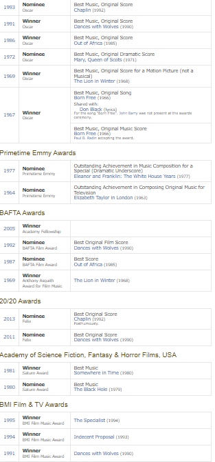

Our website needs to access JavaScript to use the offline page and use personal features, please turn it on!
Top
EXIT WEBSITE HERE
Home
Troubleshooters
Recipes
Sorry i could not fit all the awards in!
Awards John Barry
